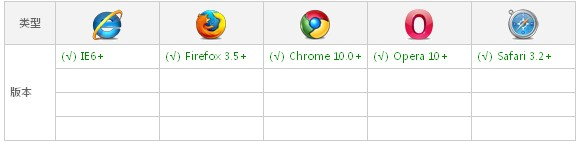

- 字体下载地址：
- Google Web Fonts | Dafont.com
- 获取字体格式：
- fontsquirrel
- 资料详情出处：
- w3cplus
实例：
@font-face {
font-family: 'YourWebFontName';
src: url('YourWebFontName.eot'); /* IE9 Compat Modes */
src: url('YourWebFontName.eot?#iefix') format('embedded-opentype'), /* IE6-IE8 */
url('YourWebFontName.woff') format('woff'), /* Modern Browsers */
url('YourWebFontName.ttf') format('truetype'), /* Safari, Android, iOS */
url('YourWebFontName.svg#YourWebFontName') format('svg'); /* Legacy iOS */
font-weight: normal;
font-style: normal;
}
语法规则：
@font-face {
font-family: <YourWebFontName>;
src: <source> [<format>][,<source> [<format>]];
[font-weight: <weight>];
[font-style: <style>];
}
取值说明：
1、YourWebFontName:此值指的就是你自定义的字体名称，最好是使用你下载的默认字体，他将被引用到你的Web元素中的font-family。如“font-family:"YourWebFontName";”
2、source:此值指的是你自定义的字体的存放路径，可以是相对路径也可以是绝路径；
3、format：此值指的是你自定义的字体的格式，主要用来帮助浏览器识别，其值主要有以下几种类型：truetype,opentype,truetype-aat,embedded-opentype,avg等；
4、weight和style:这两个值大家一定很熟悉，weight定义字体是否为粗体，style主要定义字体样式，如斜体。
兼容浏览器：

格式支持：
一、TureTpe(.ttf)格式：
.ttf字体是Windows和Mac的最常见的字体，是一种RAW格式，因此他不为网站优化,支持这种字体的浏览器有【IE9+,Firefox3.5+,Chrome4+,Safari3+,Opera10+,iOS Mobile Safari4.2+】；
二、OpenType(.otf)格式：
.otf字体被认为是一种原始的字体格式，其内置在TureType的基础上，所以也提供了更多的功能,支持这种字体的浏览器有 【Firefox3.5+,Chrome4.0+,Safari3.1+,Opera10.0+,iOS Mobile Safari4.2+】；
三、Web Open Font Format(.woff)格式：
.woff字体是Web字体中最佳格式，他是一个开放的TrueType/OpenType的压缩版本，同时也支持元数据包的分离,支持这种字体的浏览器有【IE9+,Firefox3.5+,Chrome6+,Safari3.6+,Opera11.1+】；
四、Embedded Open Type(.eot)格式：
.eot字体是IE专用字体，可以从TrueType创建此格式字体,支持这种字体的浏览器有【IE4+】；
五、SVG(.svg)格式：
.svg字体是基于SVG字体渲染的一种格式,支持这种字体的浏览器有【Chrome4+,Safari3.1+,Opera10.0+,iOS Mobile Safari3.2+】。
这就意味着在@font-face中我们至少需要.woff,.eot两种格式字体，甚至还需要.svg等字体达到更多种浏览版本的支持。